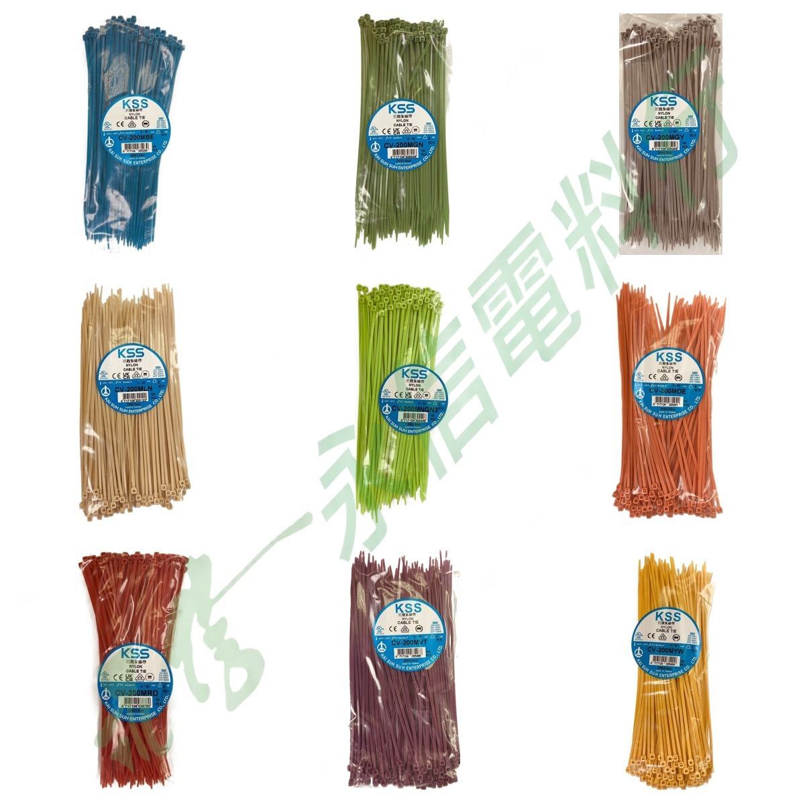

本批 9 種彩色型號皆已有獨立包裝照片，另附 1 張彩色總覽。所有網站版照片均套用永信電料行 14% 淡綠浮水印。

COLOR VARIANTS
本批彩色型號整理
CV-200MBE藍色
CV-200MGN綠色
CV-200MGY灰色
CV-200MLN淺棕色
CV-200MNGN3螢光綠
CV-200MOE橘色
CV-200MRD紅色
CV-200MVT紫色
CV-200MYW黃色
上述彩色型號與顏色依你提供的資料夾名稱及照片標示整理。特殊顏色屬訂製需求，是否可供應與實際訂購條件仍需逐次確認。
VERIFIED SPECIFICATION DATA
詳細規格
基礎型號CV-200M
長度 L203 mm / 8"
寬度 W2.5 mm / 0.1"
承受力18 lbs / 8 kgf / 80 N
最大束線徑55 mm
材質NYLON 66
耐燃等級UL94V-2
溫度85°C / 185°F
原廠顏色說明本色（白色）、黑色；特殊顏色歡迎訂做
包裝100 pcs
特殊顏色版本的實際訂製條件、批次差異、供應狀況、價格與交期仍須依完整彩色型號及當次詢價確認；不可由本頁推定為固定庫存。
ORDER CHECKLIST
特殊顏色詢價建議提供
01
完整型號
例如 CV-200MBE、CV-200MRD，不只提供「CV-200M」。
02
顏色
請同時寫明需要的顏色，避免彩色尾碼誤認。
03
需求數量
提供預計包數／數量，以便確認實際訂製條件。
04
使用需求
如有耐候、環境或其他特殊條件，請於詢價時一併提出。